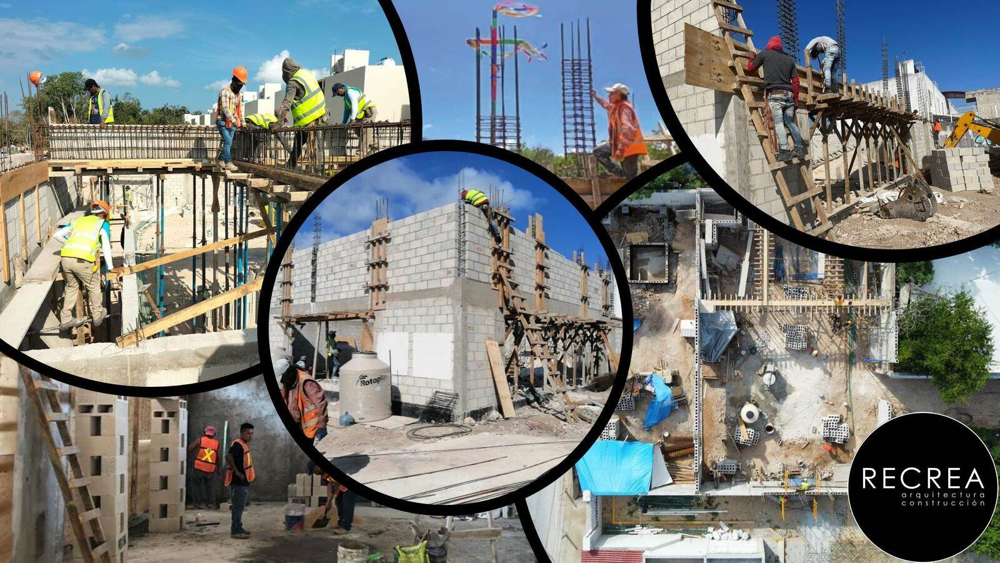

Tren Maya e Inmobiliario: Cómo el Ferrocarril Está Transformando la Construcción en la Riviera Maya
Junio 2026 • Por Recrea Construcción • 7 min de lectura
Avance Actual: Estado del Tren en 2026
El Tren Maya es un ferrocarril de 1,554 kilómetros que conecta siete estaciones en la Península de Yucatán. Aquí está el estado actual de los tramos relevantes para la Riviera Maya:
| Tramo | Ruta | Longitud | Avance |
|---|---|---|---|
| Tramo 5 Norte | Cancún — Playa del Carmen | 43.3 km | 30% |
| Tramo 5 Sur | Playa del Carmen — Tulum | 60.3 km | Operativo |
| Tramo 6 | Tulum — Chetumal | 254 km | 35% |
El Tramo 5 Norte cuenta con doble vía electrificada — el único tramo con esta especificación — reflejando el volumen de pasajeros esperado entre el Aeropuerto de Cancún y Playa del Carmen.
Las Expropiaciones de Terrenos Continúan en 2026
En febrero de 2026, el gobierno federal expropió parcelas privadas adicionales en Quintana Roo consideradas esenciales para completar el ferrocarril. Esto señala un compromiso federal continuo pero también significa que los terrenos disponibles cerca del corredor del tren se están reduciendo.
Para constructores e inversionistas, esto crea dos dinámicas:
- Los lotes edificables restantes cerca de estaciones se vuelven más valiosos
- Los propietarios de terrenos cerca de la ruta pueden enfrentar restricciones de desarrollo
Cotización Gratis en 2 Min
Cuéntanos tu proyecto — respondemos por WhatsApp en 2 min
Ubicación de Estaciones: Dónde Construir
Las propiedades cerca de estaciones de tren están experimentando la mayor apreciación. Estaciones clave de la Riviera Maya:
- Estación Aeropuerto de Cancún — conexión directa para llegadas internacionales. La demanda de construcción comercial se dispara
- Estación Playa del Carmen — acceso al centro. Proyectos residenciales y de uso mixto dentro de un radio de 2 km se aprecian más rápido
- Estación Tulum — cerca del Aeropuerto Internacional de Tulum. El doble hub de transporte (tren + aeropuerto) convierte esta en la zona de construcción más activa de México
- Puerto Aventuras — parada intermedia que impulsa nuevo interés residencial
Impacto en los Costos de Construcción
El proyecto del Tren Maya ha afectado directamente los costos de construcción en la Riviera Maya:
- Costos de mano de obra arriba 12–15% — el proyecto del tren emplea a miles de trabajadores de construcción, reduciendo la disponibilidad para proyectos privados
- Demanda de cemento y acero — la demanda regional de materiales ha empujado los precios al alza 6–8% interanual
- Equipo especializado — grúas, excavadoras y maquinaria pesada son más difíciles de rentar por los proyectos gubernamentales
Sin embargo, los valores de propiedad cerca de estaciones han aumentado 30–80%, lo que significa que construir ahora — incluso con costos más altos — sigue generando retornos sólidos.
El Factor del Distrito Financiero de Cancún
Anunciado en marzo de 2026 por la Gobernadora Mara Lezama, el Distrito Financiero y Tecnológico de Cancún agrega otro motor de crecimiento:
- Primera fase: 100 hectáreas
- Extensión total: corredor de 5 kilómetros
- Empleos: 10,000 directos + 22,000 indirectos
Este distrito, combinado con el Tren Maya, significa demanda sostenida de construcción tanto residencial como comercial a lo largo del corredor Cancún–Tulum durante la próxima década.
Servicios Relacionados
Guías Relacionadas
Gratis: Guía de Costos de Construcción 2026
Precios reales por m², costos de terreno, permisos, gastos ocultos. PDF de 196+ proyectos en la Riviera Maya.
Construye Cerca del Corredor del Tren
Conocemos los requisitos de permisos de cada municipio a lo largo de la Riviera Maya. 196+ proyectos desde 2008.
Cotización GratisQué Hacer Ahora
- Asegura tu terreno — los precios cerca de estaciones suben cada trimestre. Cada retraso cuesta dinero
- Contrata constructor — la disponibilidad de mano de obra se ajustará más conforme avancen los tramos del tren
- Obtén permisos temprano — los permisos ambientales y de construcción tardan 2–4 meses. Inicia ahora para construir en Q4 2026
- Diseña para ingreso por renta — los visitantes del Tren Maya necesitarán alojamiento a corto plazo. Construye con características listas para Airbnb